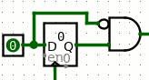
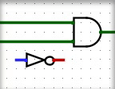

Found in Mouse Tools
The Wiring Tool is for creating and rearranging wires. It behaves similarly
to the  Edit Tool,
except it only adds new wires and modifies existing wires, and it does not
handle selection or adding new components.
Edit Tool,
except it only adds new wires and modifies existing wires, and it does not
handle selection or adding new components.

Clicking and dragging anywhere on the canvas will create a new wire or modify an existing wire segment. All wires in Logisim are either horizontal or vertical, never diagonal, but logisim will create an "L" shaped sequence of wire segments if you drag diagonally. You can control the orientation of the "L" with mouse movement: if the drag starts horizontally, the first segement will be horizontal, for example.Tip: Press Space while dragging to bend a wire's path.. You can do this repeatedly to make a complicated zig-zag path for the wire by pressing Space at each place the wire should turn a corner. Press Backspace while dragging to straighten a wire's path. Each Backspace will remove a corner point, resulting in fewer turns and a more direct path. Press Escape to cancel wire drawing.

Click and drag the end of a wire to shorten or extend it, or click and drag the middle of a wire segment and drag along the wire to open a gap and reroute a wire.Click and drag on a blank area of the canvas to start a completely new wire.
Hover over the wiring point of a component to see a description of that input or output.
Some components draw short stubs near the points to which wires can connect, such as the OR gate and controlled buffer. Logisim will silently correct attempts to create wires that slightly overshoot the stub's end.
The wiring tool does not itself have attributes, but the wire segments that it creates do.